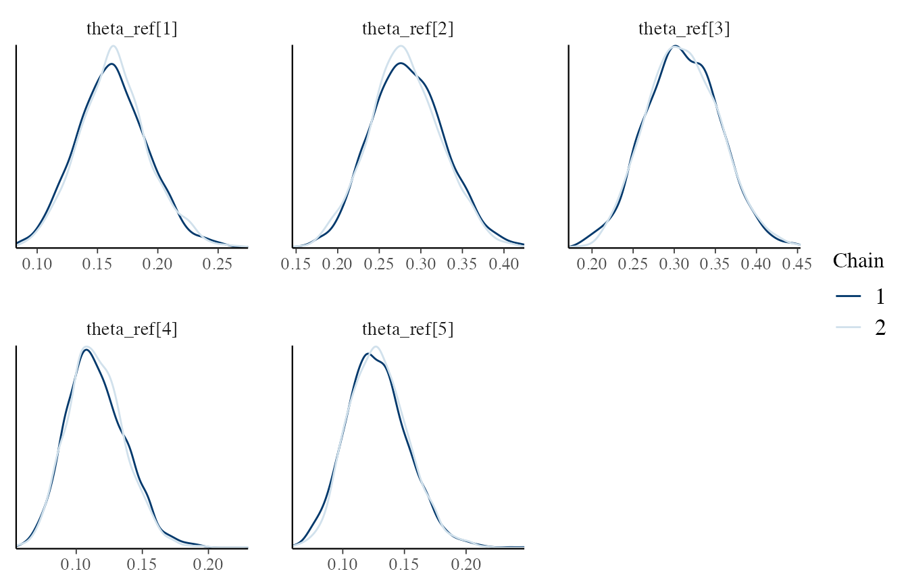

Introduction and usage
LG
2021-03-09
introduction.RmdThis vignette introduces the package.
Data generation
Let’s first create some data.
We will use the package rsamplestudy to generate a population and to extract the reference/questioned samples.
Here, we will be generating data from a “Dirichlet-Dirichlet” model.
Note that this has nothing to do with the models implemented in this package.
library(rstanBF)
#> Loading required package: Rcpp
library(dplyr)
#>
#> Attaching package: 'dplyr'
#> The following objects are masked from 'package:stats':
#>
#> filter, lag
#> The following objects are masked from 'package:base':
#>
#> intersect, setdiff, setequal, union
library(rsamplestudy)
# set.seed(123)
p <- 5
n <- 100
m <- 10
alpha <- rep(p, p)
list_pop <- rsamplestudy::fun_rdirichlet_population(n, m, p, alpha = alpha)
list_pop
#> $alpha
#> # A tibble: 1 x 5
#> `alpha[1]` `alpha[2]` `alpha[3]` `alpha[4]` `alpha[5]`
#> <dbl> <dbl> <dbl> <dbl> <dbl>
#> 1 5 5 5 5 5
#>
#> $df_sources
#> # A tibble: 10 x 6
#> source `theta[1]` `theta[2]` `theta[3]` `theta[4]` `theta[5]`
#> <int> <dbl> <dbl> <dbl> <dbl> <dbl>
#> 1 1 0.0983 0.177 0.345 0.220 0.160
#> 2 2 0.268 0.162 0.161 0.144 0.265
#> 3 3 0.217 0.430 0.0849 0.0818 0.187
#> 4 4 0.191 0.245 0.205 0.239 0.121
#> 5 5 0.139 0.268 0.361 0.114 0.118
#> 6 6 0.292 0.186 0.114 0.263 0.145
#> 7 7 0.237 0.189 0.242 0.144 0.189
#> 8 8 0.142 0.104 0.173 0.368 0.213
#> 9 9 0.174 0.309 0.116 0.131 0.270
#> 10 10 0.321 0.216 0.141 0.261 0.0614
#>
#> $df_pop
#> # A tibble: 1,000 x 6
#> source `x[1]` `x[2]` `x[3]` `x[4]` `x[5]`
#> <int> <dbl> <dbl> <dbl> <dbl> <dbl>
#> 1 1 6.18e- 5 0.647 0.353 0.000599 0.0000000424
#> 2 1 1.18e- 1 0.283 0.536 0.00247 0.0609
#> 3 1 1.60e- 2 0.00869 0.271 0.691 0.0135
#> 4 1 3.33e- 3 0.101 0.804 0.0770 0.0138
#> 5 1 8.85e- 1 0.00749 0.00144 0.103 0.00287
#> 6 1 2.68e-12 0.00144 0.367 0.281 0.351
#> 7 1 1.26e- 9 0.119 0.731 0.0000486 0.150
#> 8 1 4.03e- 1 0.000178 0.535 0.0168 0.0450
#> 9 1 2.90e- 4 0.587 0.00140 0.364 0.0470
#> 10 1 4.70e- 2 0.323 0.00963 0.620 0.000562
#> # … with 990 more rows
#>
#> $names_var
#> [1] "x[1]" "x[2]" "x[3]" "x[4]" "x[5]"
#>
#> $names_source
#> [1] "theta[1]" "theta[2]" "theta[3]" "theta[4]" "theta[5]"Sampling generation
The package compares two sets of items (reference and questioned) and evaluates their support to a pair of hypotheses.
- \(H_1\): the questioned items come from the reference source
- \(H_2\): the questioned items come from other different sources
We simulate a situation using the function make_dataset_splits from the package rsamplestudy:
k_ref <- 10
k_quest <- 10
# We sample from all sources
sources <- unique(list_pop$df_pop$source)
list_samples_diff <- list_pop$df_pop %>% rsamplestudy::make_dataset_splits(k_ref, k_quest)
source_same <- unique(list_samples_diff$df_reference$source)
list_samples_same <- list_pop$df_pop %>% rsamplestudy::make_dataset_splits(k_ref, k_quest, source_ref = source_same, source_quest = source_same)
list_samples_H <- list(H1 = list_samples_same, H2 = list_samples_diff)These need to be converted to a friendly format (matrices and lists) from rsamplestudy output:
list_data_diff <- stanBF_prepare_rsamplestudy_data(list_pop, list_samples_diff)
list_data_same <- stanBF_prepare_rsamplestudy_data(list_pop, list_samples_same)We see that each list contains the full set of observations, the set of indexes to reference items, and the set of indexes to the questioned items:
str(list_data_diff)
#> List of 3
#> $ mtx : num [1:1000, 1:5] 6.18e-05 1.18e-01 1.60e-02 3.33e-03 8.85e-01 ...
#> ..- attr(*, "dimnames")=List of 2
#> .. ..$ : NULL
#> .. ..$ : chr [1:5] "x[1]" "x[2]" "x[3]" "x[4]" ...
#> $ idx.ref : int [1:10] 406 408 413 420 432 434 436 475 490 491
#> $ idx.quest: int [1:10] 123 148 202 218 546 589 617 820 822 984From now on, we are ready to use the rstanBF package.
Data model
The package supports several models, identified by their short names:
available_models()
#> [1] "DirDir" "DirFNorm" "DirDirGamma" "NormNorm"More details are also available in data frame form:
df_models <- available_models(verbose = TRUE)
df_models
#> # A tibble: 4 x 5
#> short_name long_name S3_class hyperpriors source_files
#> <chr> <chr> <chr> <list> <list>
#> 1 DirDir Dirichlet-Dirichlet stanBF_turn <chr [1]> <chr [2]>
#> 2 DirFNorm Dirichlet-FoldedNormal stanBF_turn <chr [2]> <chr [2]>
#> 3 DirDirGamma Dirichlet-DirichletGamma stanBF_turn <chr [3]> <chr [2]>
#> 4 NormNorm Normal-Normal NULL <chr [4]> <chr [2]>and also in text form:
available_models(verbose = TRUE, do_print = TRUE)
#> Model: "DirDir"
#> Long name: "Dirichlet-Dirichlet"
#> Hyperparameters: alpha
#>
#> Model: "DirFNorm"
#> Long name: "Dirichlet-FoldedNormal"
#> Hyperparameters: c("mu", "sigma")
#>
#> Model: "DirDirGamma"
#> Long name: "Dirichlet-DirichletGamma"
#> Hyperparameters: c("alpha", "alpha_0", "beta_0")
#>
#> Model: "NormNorm"
#> Long name: "Normal-Normal"
#> Hyperparameters: c("mu_mu0", "mu_sigma0", "sigma_mu0", "sigma_sigma0")Hyperparameter elicitation
We choose the Dirichlet-Dirichlet model.
model <- 'DirDir'The only hyperparameter which must be provided is \(\alpha\), the Dirichlet parameter at the hyperprior level.
It is known since the data has been generated: let’s use it, for now.
list_hyperpriors <- list(alpha = as.numeric(list_pop$alpha))Using functions
If one wants to elicit a value for the hyperparameter(s) required by the model, the package supplies the function stanBF_elicit_hyperpriors.
See the documentation for details:
stanBF_elicit_hyperpriors(list_samples_same$df_background, model, mode_hyperparameter = 'ML', mode_ML = 'naive')
#> $alpha
#> [1] 5.624985 6.520285 5.243898 5.436044 4.805356
stanBF_elicit_hyperpriors(list_samples_same$df_background, model, mode_hyperparameter = 'ML', mode_ML = 'ML')
#> $alpha
#> [1] 8.887560 9.972066 8.114447 8.547322 7.743088Compare the estimate with the generating value:
\(\alpha = \left( 5,5,5,5,5 \right)\)
Sampling
We need to set up the HMC parameters, first:
n.iter <- 2000
n.burnin <- 200
# n.iter <- 10000
# n.burnin <- 1000
n.chains <- 2
n.cores <- 2Now we are ready! Let’s sample:
stanBF_obj_same <- rstanBF::compute_BF_Stan(list_data_same, model, list_hyperpriors, data_other = NULL, n.iter, n.burnin, n.chains, n.cores, silent = TRUE)
stanBF_obj_diff <- rstanBF::compute_BF_Stan(list_data_diff, model, list_hyperpriors, data_other = NULL, n.iter, n.burnin, n.chains, n.cores, silent = TRUE)
stanBF_obj_same
#> stanBF object containing posterior samples from H1, H2.
#> Model: Dirichlet-Dirichlet
#> Obtained BF: 19.85863
#> Ran with 2 chains, 2000 HMC iterations.
stanBF_obj_diff
#> stanBF object containing posterior samples from H1, H2.
#> Model: Dirichlet-Dirichlet
#> Obtained BF: 0.007149727
#> Ran with 2 chains, 2000 HMC iterations.Bayes Factor
The objects contain the Bayes Factors:
stanBF_obj_same$BF
#> [1] 19.85863
stanBF_obj_diff$BF
#> [1] 0.007149727Stan objects
rstanBF objects contain stanfit objects (one under \(H_1\), one under \(H_2\)), which are actually the outputs of Stan sampling procedure.
They are available under the stanfit property:
stanBF_obj_same$stanfit$H1
stanBF_obj_same$stanfit$H2One can either further process them using standard tools (rstan post-processing functions, coda, etc.), or use the supplied functions in the package.
These functions usually do different things depending on the model (e.g. often only the likelihood).
Post-processing
What follows must be implemented for each model.
For now, only stanBF_turn models are completely specified.
Posteriors
Returned objects often implement a samples method to extract samples from the interesting posteriors:
head(rstanBF::samples(stanBF_obj_same))
#> # A tibble: 6 x 13
#> Iteration Hypothesis Source `theta[1]` `theta[2]` `theta[3]` `theta[4]`
#> <int> <chr> <chr> <dbl> <dbl> <dbl> <dbl>
#> 1 1 Hp Both 0.164 0.282 0.345 0.137
#> 2 2 Hp Both 0.174 0.236 0.313 0.106
#> 3 3 Hp Both 0.207 0.301 0.269 0.110
#> 4 4 Hp Both 0.129 0.259 0.322 0.142
#> 5 5 Hp Both 0.120 0.343 0.285 0.133
#> 6 6 Hp Both 0.129 0.282 0.356 0.135
#> # … with 6 more variables: theta[5] <dbl>, rho[1] <dbl>, rho[2] <dbl>,
#> # rho[3] <dbl>, rho[4] <dbl>, rho[5] <dbl>
head(rstanBF::samples(stanBF_obj_diff))
#> # A tibble: 6 x 13
#> Iteration Hypothesis Source `theta[1]` `theta[2]` `theta[3]` `theta[4]`
#> <int> <chr> <chr> <dbl> <dbl> <dbl> <dbl>
#> 1 1 Hp Both 0.179 0.250 0.223 0.186
#> 2 2 Hp Both 0.200 0.290 0.197 0.165
#> 3 3 Hp Both 0.170 0.191 0.191 0.213
#> 4 4 Hp Both 0.183 0.368 0.168 0.169
#> 5 5 Hp Both 0.184 0.238 0.235 0.179
#> 6 6 Hp Both 0.134 0.280 0.249 0.198
#> # … with 6 more variables: theta[5] <dbl>, rho[1] <dbl>, rho[2] <dbl>,
#> # rho[3] <dbl>, rho[4] <dbl>, rho[5] <dbl>Plots
Returned objects often implement a plot_posteriors method:
rstanBF::plot_posteriors(stanBF_obj_same, 'theta')
rstanBF::plot_posteriors(stanBF_obj_diff, 'theta')
Prior and posterior predictive distributions
Models often implement draws from the prior and posterior predictive distributions.
Prior predictive: the names of the variables in the Stan source start with sim_.
Posterior predictive: the names of the variables in the Stan source start with pred_.
One can use the prior_pred and posterior_pred methods to extract and format them:
df_prior_pred_same <- prior_pred(stanBF_obj_same)
head(df_prior_pred_same, 20)
#> # A tibble: 20 x 7
#> `x[1]` `x[2]` `x[3]` `x[4]` `x[5]` Hypothesis Source
#> <dbl> <dbl> <dbl> <dbl> <dbl> <chr> <chr>
#> 1 5.28e- 2 0.0715 0.0309 0.820 2.45e- 2 Hp Both
#> 2 9.01e- 5 0.0122 0.171 0.762 5.39e- 2 Hp Both
#> 3 9.39e- 2 0.0105 0.302 0.386 2.08e- 1 Hp Both
#> 4 2.25e- 3 0.000231 0.849 0.116 3.24e- 2 Hp Both
#> 5 2.36e- 4 0.914 0.0818 0.00324 6.61e- 4 Hp Both
#> 6 9.34e- 5 0.0000549 0.144 0.000000270 8.56e- 1 Hp Both
#> 7 3.49e- 1 0.239 0.0957 0.280 3.70e- 2 Hp Both
#> 8 3.76e- 1 0.00193 0.0734 0.345 2.04e- 1 Hp Both
#> 9 4.67e- 1 0.282 0.0493 0.00134 2.00e- 1 Hp Both
#> 10 3.08e- 2 0.0000502 0.000000729 0.0158 9.53e- 1 Hp Both
#> 11 2.17e- 9 0.00185 0.0426 0.956 1.89e-14 Hp Both
#> 12 9.85e- 1 0.0000000536 0.0138 0.000921 7.13e- 4 Hp Both
#> 13 2.74e- 1 0.136 0.00000385 0.155 4.34e- 1 Hp Both
#> 14 8.57e- 1 0.0163 0.000699 0.000850 1.25e- 1 Hp Both
#> 15 9.16e- 3 0.215 0.000000729 0.438 3.37e- 1 Hp Both
#> 16 3.50e- 1 0.00785 0.641 0.000382 1.28e- 3 Hp Both
#> 17 1.26e-13 0.00129 0.765 0.000116 2.34e- 1 Hp Both
#> 18 3.33e- 5 0.00142 0.113 0.675 2.10e- 1 Hp Both
#> 19 4.46e- 1 0.00171 0.0152 0.00138 5.36e- 1 Hp Both
#> 20 6.74e- 1 0.000234 0.0148 0.0987 2.13e- 1 Hp BothThis is interpreted as an example of a dataset, generated according to the model, before having observed any data.
They can be used to assess if the specified hyperparameters are too restrictive or too wide.
df_posterior_pred_same <- posterior_pred(stanBF_obj_same)
head(df_posterior_pred_same, 20)
#> # A tibble: 20 x 7
#> `x[1]` `x[2]` `x[3]` `x[4]` `x[5]` Hypothesis Source
#> <dbl> <dbl> <dbl> <dbl> <dbl> <chr> <chr>
#> 1 6.90e-10 0.905 0.0180 6.35e- 2 1.38e- 2 Hp Both
#> 2 1.91e- 2 0.876 0.0527 5.21e- 8 5.18e- 2 Hp Both
#> 3 3.65e- 1 0.259 0.341 3.52e- 2 8.31e- 8 Hp Both
#> 4 4.05e- 1 0.245 0.350 1.76e- 5 1.83e- 5 Hp Both
#> 5 1.70e- 1 0.660 0.121 5.55e- 8 4.88e- 2 Hp Both
#> 6 3.91e- 2 0.924 0.0359 1.01e- 3 6.24e- 5 Hp Both
#> 7 3.36e- 3 0.0907 0.0253 2.05e- 5 8.81e- 1 Hp Both
#> 8 2.49e- 1 0.644 0.0000136 1.07e- 1 3.73e- 4 Hp Both
#> 9 6.72e- 1 0.168 0.150 9.47e- 3 3.08e- 4 Hp Both
#> 10 7.13e- 4 0.527 0.0331 4.39e- 1 4.99e- 6 Hp Both
#> 11 5.55e- 5 0.177 0.818 4.50e- 3 1.34e- 6 Hp Both
#> 12 1.95e- 2 0.954 0.00783 1.15e- 2 7.54e- 3 Hp Both
#> 13 9.16e- 3 0.170 0.696 1.24e- 1 4.93e- 9 Hp Both
#> 14 2.56e- 1 0.0949 0.649 7.27e-26 3.89e- 8 Hp Both
#> 15 3.35e- 3 0.692 0.183 1.22e- 1 2.32e-15 Hp Both
#> 16 1.55e- 1 0.183 0.304 7.18e- 3 3.51e- 1 Hp Both
#> 17 2.17e- 1 0.588 0.00406 1.07e- 6 1.91e- 1 Hp Both
#> 18 1.19e- 1 0.396 0.479 5.50e- 3 1.44e-15 Hp Both
#> 19 3.06e- 5 0.0770 0.794 1.25e- 1 3.48e- 3 Hp Both
#> 20 2.12e- 3 0.203 0.169 6.10e- 1 1.64e- 2 Hp Bothrstan functions
stanfit objects implement several plotting functions (see here for a reference).
For example, traceplots:
# A stanfit object
# stanBF_obj_same$stanfit$H1
# Plot using all params
stanBF_obj_diff$stanfit$H1 %>% rstan::stan_trace()
#> 'pars' not specified. Showing first 10 parameters by default.
stanBF_obj_diff$stanfit$H2 %>% rstan::stan_trace()
#> 'pars' not specified. Showing first 10 parameters by default.bayesplot
The popular bayesplot package can be used to produce plots to assess convergence of the MCMC chains. It includes an interface to stanfit objects, returned by rstan.
It is easy to use bayesplot with this package. One must first extract all MCMC samples using the rstan tools:
library(bayesplot)
#> This is bayesplot version 1.8.0
#> - Online documentation and vignettes at mc-stan.org/bayesplot
#> - bayesplot theme set to bayesplot::theme_default()
#> * Does _not_ affect other ggplot2 plots
#> * See ?bayesplot_theme_set for details on theme setting
# A stanfit object
# stanBF_obj_same$stanfit$H1
# All variables except the logPosterior
all_vars_no_lp <- setdiff(names(stanBF_obj_same$stanfit$H2), 'lp__')
all_vars_no_lp
#> [1] "theta_ref[1]" "theta_ref[2]" "theta_ref[3]"
#> [4] "theta_ref[4]" "theta_ref[5]" "theta_quest[1]"
#> [7] "theta_quest[2]" "theta_quest[3]" "theta_quest[4]"
#> [10] "theta_quest[5]" "sim_d_ref[1]" "sim_d_ref[2]"
#> [13] "sim_d_ref[3]" "sim_d_ref[4]" "sim_d_ref[5]"
#> [16] "sim_d_quest[1]" "sim_d_quest[2]" "sim_d_quest[3]"
#> [19] "sim_d_quest[4]" "sim_d_quest[5]" "sim_theta_ref[1]"
#> [22] "sim_theta_ref[2]" "sim_theta_ref[3]" "sim_theta_ref[4]"
#> [25] "sim_theta_ref[5]" "sim_theta_quest[1]" "sim_theta_quest[2]"
#> [28] "sim_theta_quest[3]" "sim_theta_quest[4]" "sim_theta_quest[5]"
#> [31] "pred_d_ref[1]" "pred_d_ref[2]" "pred_d_ref[3]"
#> [34] "pred_d_ref[4]" "pred_d_ref[5]" "pred_d_quest[1]"
#> [37] "pred_d_quest[2]" "pred_d_quest[3]" "pred_d_quest[4]"
#> [40] "pred_d_quest[5]"
outputs_H1 <- stanBF_obj_same$stanfit$H1 %>% rstan::As.mcmc.list()
outputs_H2 <- stanBF_obj_same$stanfit$H2 %>% rstan::As.mcmc.list()
# Equivalent:
# outputs_H1 <- stanBF_obj_same$stanfit$H1 %>% rstan::extract(pars = all_vars_no_lp)
# outputs_H2 <- stanBF_obj_same$stanfit$H2 %>% rstan::extract(pars = all_vars_no_lp)Then, one can use bayesplot methods. (see the documentation)
As an example, we can plot the posterior densities across MCMC chains, selecting only the theta_ref parameters:
# Density across chains
# use a regular expression to subset the interesting variables
outputs_H1 %>% bayesplot::mcmc_dens_overlay(regex_pars = '^theta_ref')
Parameter value checks
bayesplot contains methods to overlay generating values to posterior distributions.
Let’s try for \(\boldsymbol{\theta_i}\) (see the Dirichlet-Dirichlet model vignette).
Using data generated under \(H_1\):
# Collect the true values
df_source_same <- list_pop$df_sources %>% filter(source == source_same) %>% select(-source)
df_source_same
#> # A tibble: 1 x 5
#> `theta[1]` `theta[2]` `theta[3]` `theta[4]` `theta[5]`
#> <dbl> <dbl> <dbl> <dbl> <dbl>
#> 1 0.139 0.268 0.361 0.114 0.118
true_vals <- as.numeric(df_source_same)
draws_same <- stanBF_obj_same$stanfit$H1 %>%
as.matrix(pars = 'theta_ref')
bayesplot::mcmc_recover_intervals(draws_same, true_vals)